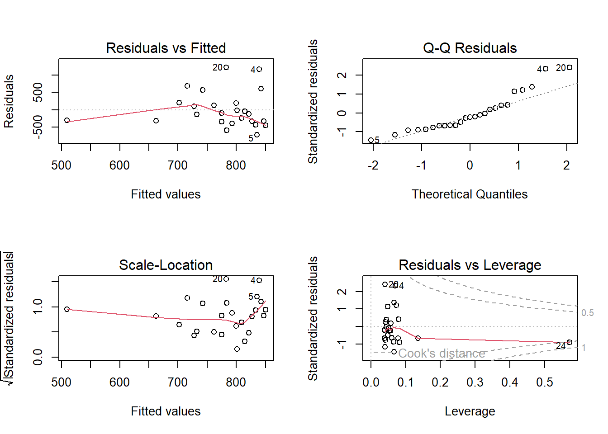
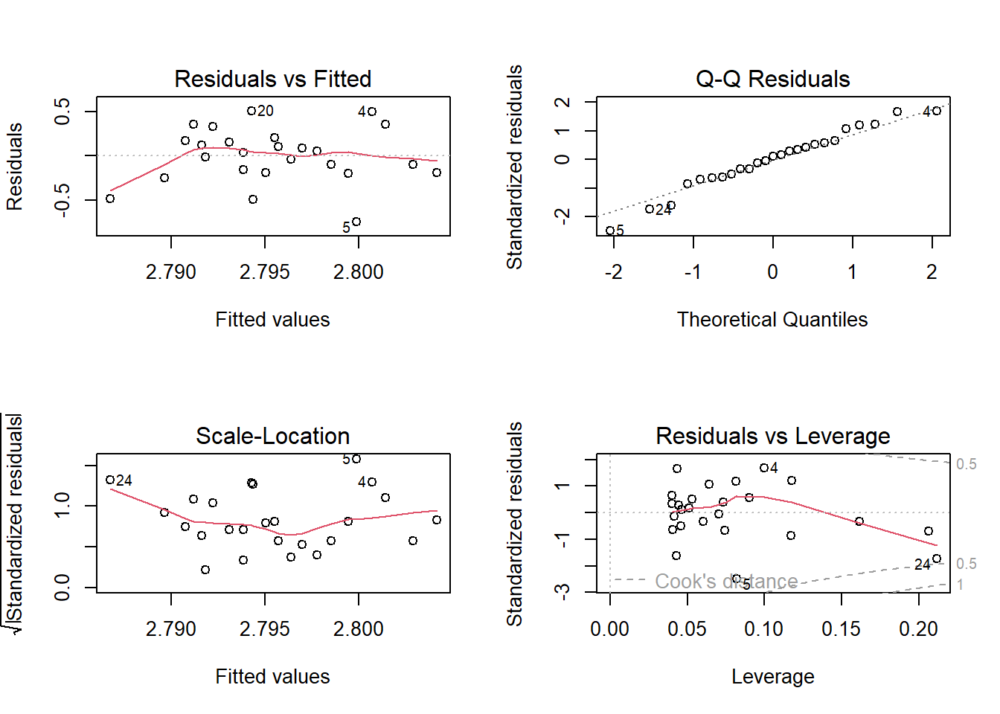
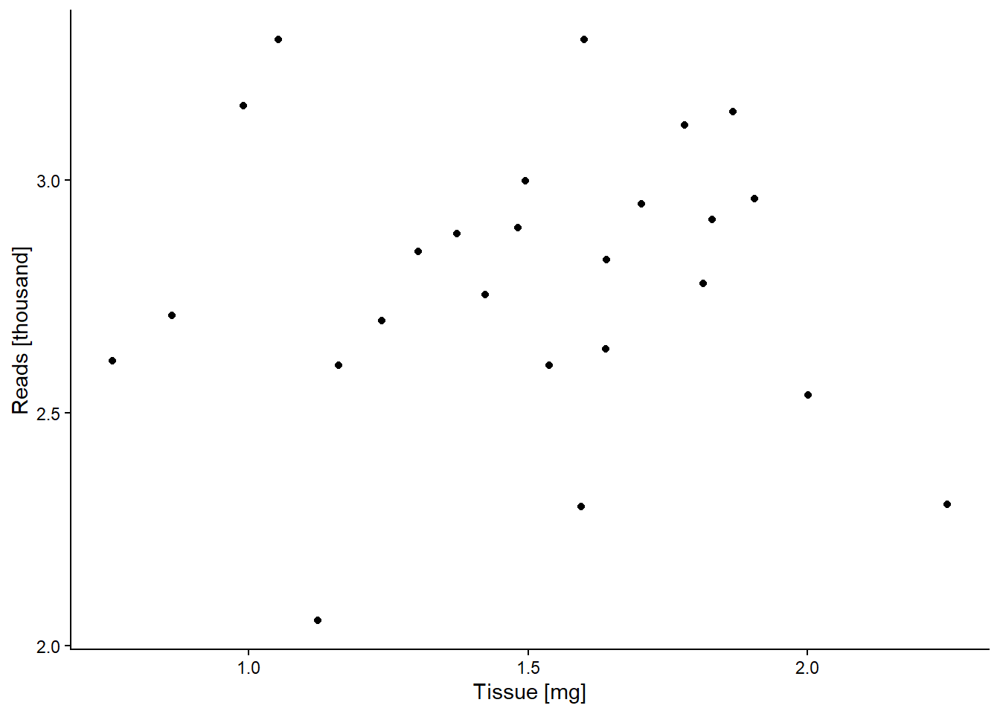
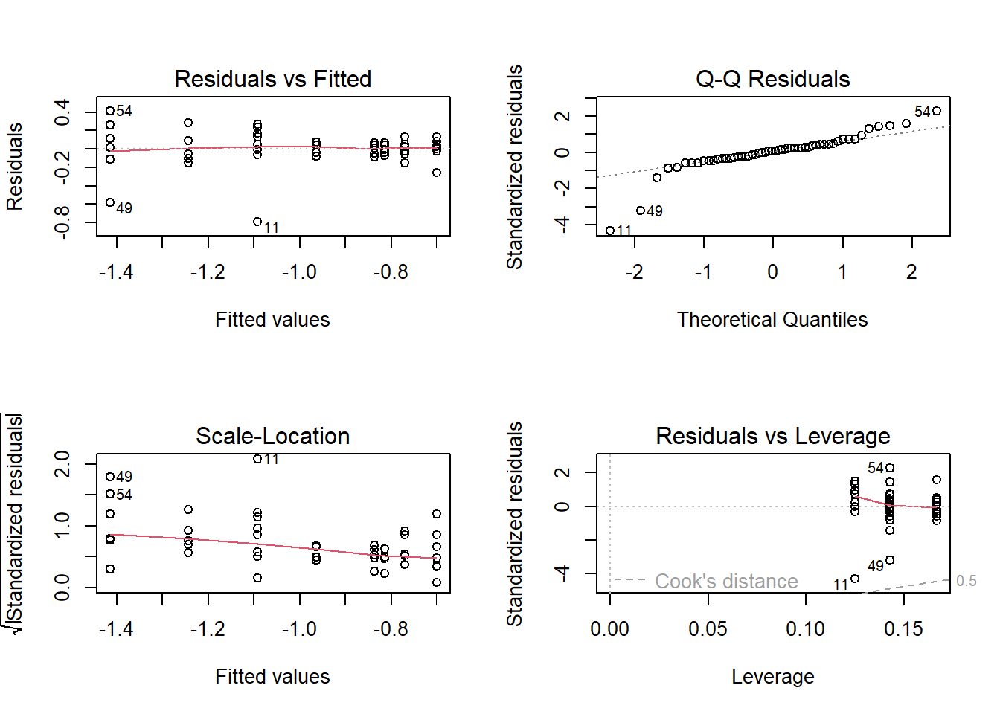
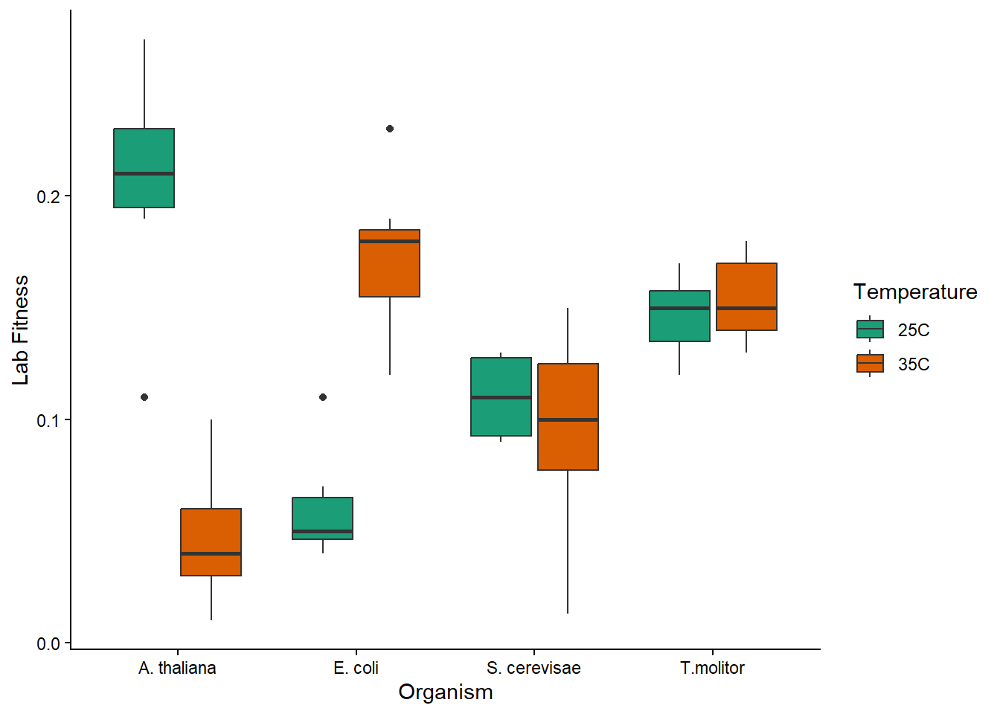
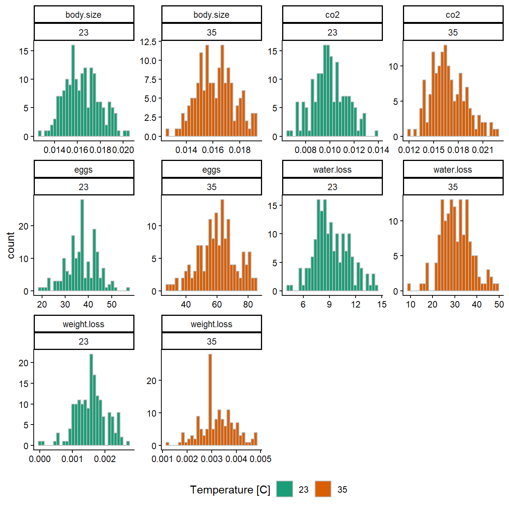
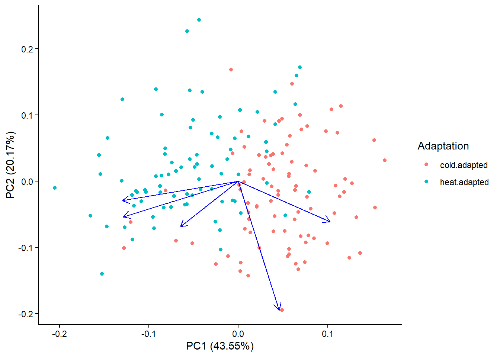
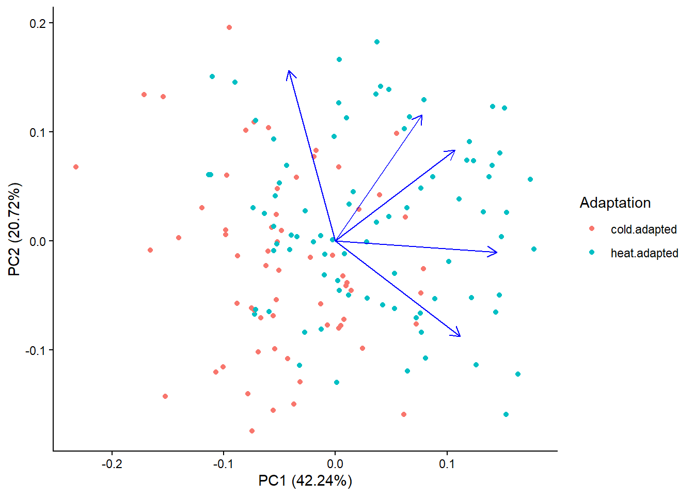

| library | reads | tissue |
|---|---|---|
| 1 | 409 | 5.7 |
| 2 | 511 | 7.3 |
| 3 | 345 | 100.3 |
| 4 | 2001 | 11.3 |
Exam HT 2025
Question 1
A)
Because the data should be from a Poisson distribution (counts of mutations) and we want to do a regression of mutations compared to hair and skin as a response to the participants age, a generalized linear regression would be appropriate so we can choose the distribution. (Alternatively we could attempt to transform the data to approximate a normal distribution.) The null hypothesis is that there is no effect of age on number of mutations in haploid sperm cells.
B)
The sample size for estimating the effect of age is the number of participants (713).
C)
- F = 36 / (97 / 7128) = 2645.443
- P = pf(2645.443, 1, 7128, lower.tail = FALSE) = 0
- R2 = 36 / (36 / 97) = 0.270…
Considering the p-value the test indicates a difference in mutation rate based on age. However, the low R2 value indicates that this difference may not be useful in a practical sense, i.e. there is a difference in number of mutations due to age but it’s not a reliable way to make predictions.
Question 2
Data
a)
To investigate if amount of tissue affects number of reads a linear regression is appropriate. Amount of tissue should follow a normal distribution and number of reads can be transformed to approximate a normal distribution (from Poisson). The null hypothesis is that there is no effect of tissue amount on number of reads.
b)
mRNA_model <- lm(
reads ~ tissue,
data = mRNA
)The residuals don’t look very good with some data points being noticeably different from the majority. A log10 transformation may help.
par(mfrow = c(2, 2))
plot(mRNA_model)
par(mfrow = c(1, 1))With log10 transforming both axies, the residuals look better. The left-hand plots could still be more homogenous, but the quantile-quantile plot looks nice and there are no clear outliers. Checking the results against a non-parametric test may be advised, but linear regression is pretty robust so I think it’s ok.
mRNA_model_log <- lm(
log10(reads) ~ log10(tissue),
data = mRNA
)
par(mfrow = c(2, 2))
plot(mRNA_model_log)
par(mfrow = c(1, 1))c)
- F = 0.004…
- df = 1 and 23
- P = 0.94…
- R2 = -0.04…
d)
ggplot(
mRNA,
aes(x = log10(tissue), y = log10(reads))) +
theme_classic() +
geom_point() +
labs(
x = "Tissue [mg]",
y = "Reads [thousand]"
)
The regression test indicates that there is no difference in number of reads based on amount of tissue, so it’s not my fault we got a low read count. I can now complain to SciLife lab.
Question 3
Data
| organism | temperature | LabFitness_mean |
|---|---|---|
| A. thaliana | 25C | 0.2057143 |
| A. thaliana | 35C | 0.0471429 |
| E. coli | 25C | 0.0608333 |
| E. coli | 35C | 0.1728571 |
| S. cerevisae | 25C | 0.1100000 |
| S. cerevisae | 35C | 0.0966250 |
| T.molitor | 25C | 0.1466667 |
| T.molitor | 35C | 0.1542857 |
a)
Because we have one continous variable and two factors, a two-way ANOVA is appropriate. The main null hypothesis is that temperature has no effect on fitness. Other null hypothesies are that there is no difference between organism and that organisms react the same to temperature (the interaction).
b)
temp_aov <- aov(
LabFitness ~ organism * temperature,
data = temp
)The residuals look good. There are a few deviating data points, but variance is homogenous and there are no identified outliers. The data could be log10 transformed, but that will also make the interpretation more difficult and I don’t consider the trade-off worth it.
par(mfrow = c(2, 2))
plot(temp_aov)
par(mfrow = c(1, 1))The log10 transformed data actually looks worse so I discard that model.
temp_aov_log <- aov(
log10(LabFitness) ~ organism * temperature,
data = temp
)
par(mfrow = c(2, 2))
plot(temp_aov_log)
par(mfrow = c(1, 1))c)
The test indicated a difference in fitness based on organism (F = 4.910, df = 3, p = 0.00483) as well as a difference in how the organisms handled the temperatures (interaction, F = 38.569, df = 3, p = 1.3e-12). There was, however, no difference based on temperature alone (F = 3.152, df = 1, p = 0.08245).
A post-hoc analysis indicated that only the flour beetle and baker’s yeast differed from one another. The boxplot overview would indicate that rockcress and E. coli reacted strongly to the different temperatures, and in opposite ways. Rockcress showed lower fitness at higher temperatures while E. coli showed higher fitness. The other organism seemed largely unaffected, leading me to believe that the temperatures are within their “comfort zone”.
d)
ggplot(
temp,
aes(x = organism, y = LabFitness, fill = temperature)
) +
theme_classic() +
geom_boxplot() +
scale_fill_brewer(palette = "Dark2") +
labs(x = "Organism", y = "Lab Fitness", fill = "Temperature")
e)
The yeast and animal appear to have a different (and similar) viable temperature range, as opposed to the plant and bacteria. The experiment would need to be repeated for more temperatures to determine if the temperature range is larger or shifted. Based on previous litterature, it is reasonable that bacteria prefer the higher temperature. While animals that can move have the posibility to behaviourly manage their body temperature unlike plants. More information about the experimental design would need to be provided to assess how relevant that is to this dataset.
Question 4
Data
| adaptation | temperature | co2 | water.loss | body.size | weight.loss | eggs |
|---|---|---|---|---|---|---|
| cold.adapted | 23 | 0.0093632 | 10.435607 | 0.0155833 | 0.0017522 | 36.60000 |
| cold.adapted | 35 | 0.0156434 | 30.988282 | 0.0157429 | 0.0029937 | 54.38095 |
| heat.adapted | 23 | 0.0105966 | 8.011381 | 0.0173914 | 0.0013889 | 37.92593 |
| heat.adapted | 35 | 0.0176884 | 30.465167 | 0.0165714 | 0.0034214 | 64.70238 |
a)
I think the distributions in the dataset are good enough for running PCA. They aren’t perfect (most notably eggs and weight loss) but log10 transformation didn’t make it considerably better.
beetles_long <- beetles |>
tidyr::pivot_longer(
tidyselect::where(is.numeric),
values_to = "values",
names_to = "variable"
)
ggplot(
beetles_long,
aes(x = values, fill = temperature)
) +
theme_classic() +
geom_histogram(color = "grey") +
facet_wrap(variable ~ temperature, ncol = 4, scales = "free") +
scale_fill_brewer(palette = "Dark2") +
labs(fill = "Temperature [C]", x = NULL) +
theme(legend.position = "bottom")
b)
Assay at 23 Celsius
The first three components explain 81.6 % of variance (43.6 %, 20.0 %, and 17.9 % respectively), so I will focus on those. PC1 consists mainly of metabolic rate (CO2) and body size decresing with higher component scores, as opposed to water loss which increases. PC2 is dominated by weight loss which decreases along the component. PC3 indicates more eggs laid at higher component scores.
beetles_23_pca <- prcomp(
beetles_23[4:8],
scale = T
)
summary(beetles_23_pca)Importance of components:
PC1 PC2 PC3 PC4 PC5
Standard deviation 1.4756 1.0043 0.9455 0.7978 0.53251
Proportion of Variance 0.4355 0.2017 0.1788 0.1273 0.05671
Cumulative Proportion 0.4355 0.6372 0.8160 0.9433 1.00000beetles_23_pcaStandard deviations (1, .., p=5):
[1] 1.4756153 1.0042896 0.9454505 0.7978185 0.5325137
Rotation (n x k) = (5 x 5):
PC1 PC2 PC3 PC4 PC5
co2 -0.5782792 -0.1315521 -0.1236379 0.4165123 -0.67787785
water.loss 0.4583974 -0.2736180 0.2493008 0.8006700 0.10854348
body.size -0.5745734 -0.2402409 -0.2291959 0.2213451 0.71458051
weight.loss 0.2041997 -0.8693397 -0.3075728 -0.3000897 -0.13377682
eggs -0.2891935 -0.3071809 0.8805856 -0.2154010 0.01335638Assay at 35 Celsius
Similarly to the 23 degree assay, the 35 degree assay may also be mostly summarized by the first three principal components (42.2 %, 20.7 %, 18.2 % respectively). PC1 also summarises metabolism and body size, however, it now includes weight loss following the same trend of increasing along the component. PC2 mostly consists of water loss and eggs laid increasing with higher component score. PC3 is almost the same as PC2 except that water loss now decreases.
beetles_35_pca <- prcomp(
beetles_35[4:8],
scale = T
)
summary(beetles_35_pca)Importance of components:
PC1 PC2 PC3 PC4 PC5
Standard deviation 1.4533 1.0180 0.9535 0.8394 0.48756
Proportion of Variance 0.4224 0.2072 0.1818 0.1409 0.04754
Cumulative Proportion 0.4224 0.6297 0.8115 0.9525 1.00000beetles_35_pcaStandard deviations (1, .., p=5):
[1] 1.4533458 1.0179568 0.9535180 0.8394289 0.4875578
Rotation (n x k) = (5 x 5):
PC1 PC2 PC3 PC4 PC5
co2 0.4662931 0.3629810 0.01988682 -0.73060803 0.34151422
water.loss -0.1821475 0.6826383 -0.68222182 0.18196902 -0.04783203
body.size 0.6302348 -0.0446352 -0.15411265 0.02090886 -0.75935760
weight.loss 0.4883128 -0.3824521 -0.45500118 0.35696950 0.52993182
eggs 0.3372652 0.5039721 0.55081859 0.55248057 0.15371542c)
(I’m out of time.)
Assay 23 degree has better separation than 35 degrees.
# Needs ggortify loaded to handle class prcomp
autoplot(
beetles_23_pca,
data = beetles_23,
color = "adaptation",
loadings = T,
loadings.color = 'blue',
loading.label = T,
loadings.label.size = 3
) +
theme_classic() +
labs(color = "Adaptation")
# Needs ggortify loaded to handle class prcomp
autoplot(
beetles_35_pca,
data = beetles_35,
color = "adaptation",
loadings = T,
loadings.color = 'blue',
loading.label = T,
loadings.label.size = 3
) +
theme_classic() +
labs(color = "Adaptation")
Question 5
a)
The data comes from a Poisson distribution but since we are interested in a difference between groups (two factors with two groups each) I would like to try a non-parametric version of two-way ANOVA.
b)
Due to the small sample size and distribution, I would instead look at random sampling in an attempt to approximate a normal distribution for the dataset as a more robust method.
c)
Possible confounding factors are location grown, since the different environment may affect reproduction (although I don’t think this is makes a difference in this situation); the person counting seeds suddenly changed for only one verity, causing possible measurment inconsistencies.
d)
I think there are 80 independent observations due to each grape comming from a seperate flower. More stems could be sampled, taking 80 grapes total from a larger number of stems.